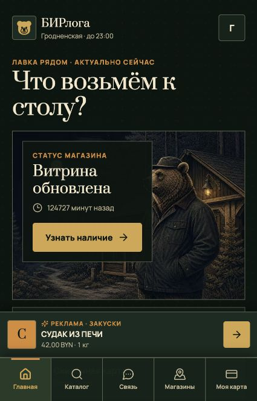

01 / 03Демо доступно
WEB PLATFORM / BUSINESS
Beerloga.
Цифровое присутствие магазина: современная витрина, продуманный пользовательский сценарий и база для дальнейших онлайн-сервисов.
WebUX/UIGitVercelAI-assisted
Открыть демоBEERLOGA / HOME SCREEN

GITHUB / HOME